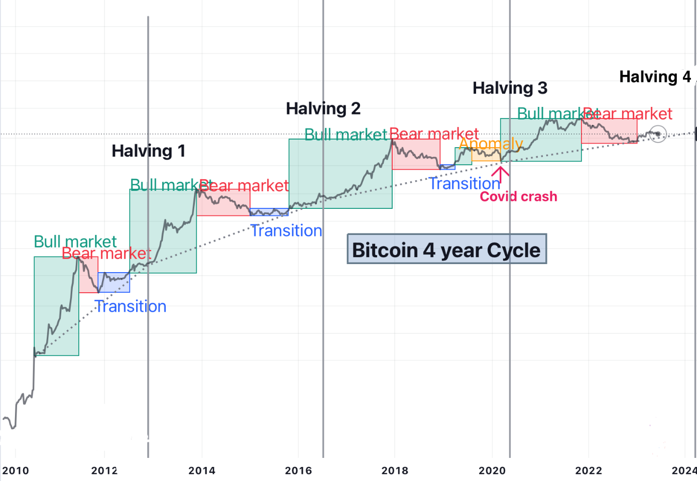
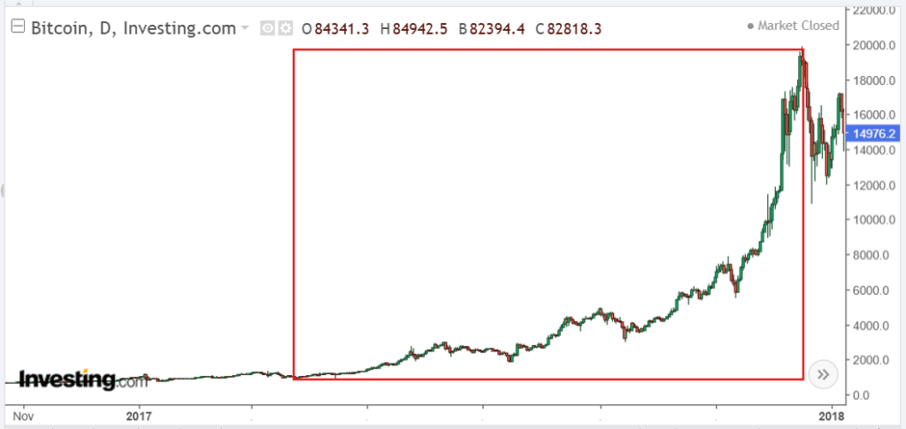

- La situation macro-économique ou géopolitique internationale
- Le niveau technique des solutions proposées par les différents projets
- L'adoption de ces projets par le grand public
- La psychologie de marché : euphorie ou déni des investisseurs et des médias

Les déterminations de cycles se font sur l'ensemble du marché des cryptomonnaies, seulement il est pour habitude de prendre le graphique du Bitcoin comme représentant, car c'est celui-ci qui draine le marché et qui capitalise le plus.
I. Le Bull Run 🐂
📊 Caractéristiques d'un Bull Run
- Augmentations de capitalisation très importantes : facteur 2, 10, voire 100 pour les projets les plus novateurs avec un faible Market Cap de base
- Afflux massif de nouveaux investisseurs (particuliers et professionnels)
- Intérêt accru des médias mainstream pour les cryptomonnaies
- Phase permettant aux investisseurs de faire des profits conséquents
📅 Les 3 Bull Runs historiques du Bitcoin
🥇 1er Bull Run (2013)
| Période | Prix de départ | Plus haut | Performance |
|---|---|---|---|
| Janv. 2013 → Déc. 2013 | ~10$ | ~1 200$ | +12 000% |
Particularité : Ce bull run s'effectue en deux impulsions distinctes : un premier pic à 250$ en avril (+240%), puis un nouveau sommet dépassant les 1 000$ en décembre.
🥈 2ème Bull Run (2016-2017)
| Période | Prix de départ | Plus haut | Performance |
|---|---|---|---|
| Début 2016 → Fin 2017 | ~200$ | ~20 000$ | +10 000% |
Particularité : Forte hausse exponentielle, illustrant la puissance d'adoption progressive du Bitcoin.

🥉 3ème Bull Run (2020-2021)
| Période | Prix de départ | Plus haut | Performance |
|---|---|---|---|
| 2020 → Nov. 2021 | ~3 800$ | ~69 000$ | +1 800% |
Exemple concret : Lors du dernier bull run, quand le Bitcoin réalisa son nouveau point le plus haut à 69 000$, la majorité des investisseurs criaient haut et fort que le Bitcoin atteindrait la barre symbolique des 100 000$. Pourtant, cela n'est jamais arrivé et beaucoup ont perdu de l'argent, attendant désespérément ce prix alors que le marché ne cessait de baisser.
💡 Conseil : Pensez à prendre des profits car le marché corrigera tôt ou tard. Restez prudent lors de l'avènement de nouvelles tendances et ne vous y placez pas lorsque la hype est haute.
II. Le Bear Market 🐻
🔍 Caractéristiques d'un Bear Market
- Période où la majeure partie des pertes sont engendrées
- Marché incertain, peu profitable, qui paraît "mourir"
- Beaucoup d'investisseurs perdent espoir dans leurs actifs
- Mais : Phase routinière, inévitable et surtout saine pour le marché
📅 Les 3 Bear Markets historiques du Bitcoin
🔻 1er Bear Market (2014-2015)
| Période | Prix de départ | Prix de fin | Perte |
|---|---|---|---|
| Janv. 2014 → Mai 2015 | ~1 160$ | ~150$ | -85% (÷8) |
Particularité : Premier bear market très violent, marquant la fin de l'euphorie du premier bull run.
🔻 2ème Bear Market (2018-2019)
| Période | Prix de départ | Prix de fin | Perte |
|---|---|---|---|
| Janv. 2018 → Janv. 2019 | ~19 700$ | ~3 160$ | -83% (÷6) |
🔻 3ème Bear Market (2021 - en cours)
| Début | Prix de départ (ATH) | Prix actuel (ex.) | Perte |
|---|---|---|---|
| Nov. 2021 → ... | ~69 000$ | Variable | -74% (÷4) depuis le top |
Note : Ce bear market étant encore en cours au moment de l'écriture, on ne peut pas savoir si nous avons déjà trouvé le point le plus bas.
💎 Le Bear Market : période d'opportunités
🛍️ Voir le Bear Market comme des "soldes"
- C'est là où les prix sont au plus bas
- Profitez de la baisse pour acheter vos tokens à un prix très avantageux
- Ce n'est pas lors d'un bull run que vous pourrez espérer un Bitcoin à -70%
- Se placer durant le bear market permet d'optimiser vos profits lors du prochain bull run
🧹 Le Bear Market comme "purge" du marché
Le bear market agit comme une purge où les capitaux sont massivement retirés des crypto-actifs. Seuls les projets avec une réelle utilité ou communauté s'en remettent.
- Il n'est pas rare de voir des projets dans le top 100 des meilleures cryptos ne jamais remonter
- De nouveaux projets ont pris leur place, ou les investisseurs sont passés à autre chose
- Certains ont tout simplement perdu confiance en ce projet
• Fiables : équipe identifiable, code audité, roadmap claire
• Sérieux : produit fonctionnel, cas d'usage réel, communauté active
• Utiles : résolution d'un problème concret, avantage technologique
Ne jamais investir sans faire ce travail de recherche au préalable. Sinon, vous vous exposez au risque de tout perdre si le projet n'est pas assez solide pour résister au bear market.
III. Synthèse : Naviguer les cycles
| Phase | Psychologie | Stratégie recommandée | Risque principal |
|---|---|---|---|
| Bull Run 🐂 | Euphorie, FOMO, optimisme excessif | • Prendre des profits progressivement • Ne pas chasing les sommets • Sécuriser une partie en stablecoins |
Acheter au plus haut et subir la correction |
| Bear Market 🐻 | Pessimisme, peur, capitulation | • Accumuler progressivement (DCA) • Sélectionner des projets solides • Préparer le prochain cycle |
Investir dans des projets qui ne survivront pas |
• Le Bull Run est le moment de récolter, pas de semer
• Le Bear Market est le moment de semer, pas de récolter
• La discipline bat toujours l'émotion sur le long terme
"Le marché peut rester irrationnel plus longtemps que vous ne pouvez rester solvable." — Adaptez votre stratégie, pas vos convictions.